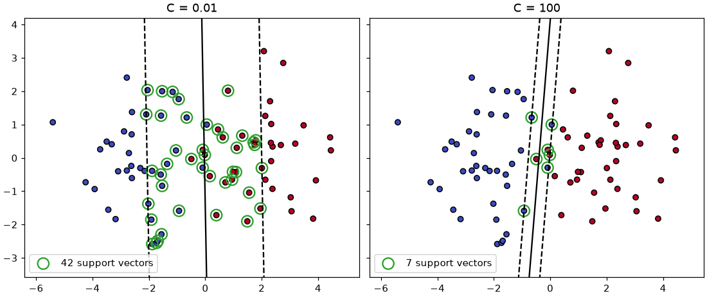
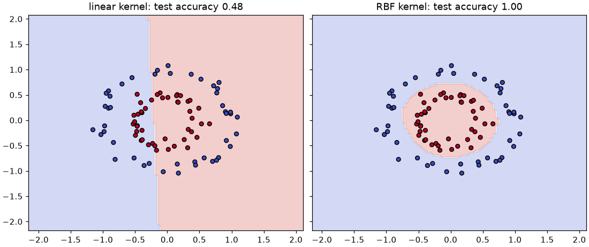
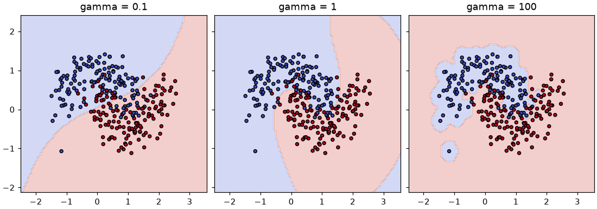

🛣️ Lesson 4.3: Support Vector Machines
Separate two classes with the widest possible street, bend that street into curves with the kernel trick, and put a tuned support vector machine to work on Pinecrest's churn problem.
🎯 Learning Objectives
By the end of this lesson, you will be able to:
- Explain the maximum-margin idea and find the support vectors of a fitted model
- Predict how changing
Candgammachanges the margin, the number of support vectors and the risk of overfitting - Explain the kernel trick and use the RBF kernel to learn a curved boundary
- Build a scaled
SVCpipeline, rank withdecision_function, handle imbalance withclass_weight, and tuneCandgammawith cross-validation - Decide when an SVM is a sensible choice and when its training time rules it out
In This Lesson
🧭 The Widest Street
You have now met three ways to classify: k-nearest neighbors asks the closest past customers (Lesson 4.1), logistic regression adds up weighted features (Lesson 3.1), and Naive Bayes multiplies clues (Lesson 4.2). A support vector machine (SVM) asks a geometric question instead: where can I draw a boundary that stays as far as possible from both classes?
💡 Mental Model: Building a Street Between Two Neighborhoods
Picture two neighborhoods on a map, one red and one blue, and a city planner who must build a straight street between them. Many streets would separate them. The planner picks the widest one that fits, because a wide street leaves room for error: a new house built near the edge of either neighborhood will still land on the correct side.
Now notice which houses decided where the street went: only the ones right on the curbs. The houses deep inside each neighborhood could move around freely and the street would not change. Those curb-side houses are the support vectors, and they are the only training points the final model needs to remember.
Real neighborhoods overlap, and real boundaries curve. The rest of the SVM story is two extensions of the street picture: allowing a few houses on the wrong side (soft margins, controlled by C), and bending the street with the kernel trick (controlled, for the most popular kernel, by gamma).
🤔 Why This Matters
SVMs were among the most accurate general-purpose classifiers for years, and they remain excellent on small and medium data sets with many features, such as text, sensor signals or measurements. More importantly for you, they teach three ideas that come back everywhere: margins (how confident a boundary is), kernels (similarity as a modeling tool) and the trade-off between fitting the training data and staying simple. You will also see their limits: training time grows fast with the number of rows, and on business tables like Pinecrest's, tree ensembles (Module 5) usually win.
📏 Support Vectors and the Margin
Start with a picture you can see: 80 points in two dimensions, two classes, slightly overlapping. make_blobs draws them from two clouds; the seed makes them the same on every run.
import numpy as np
import pandas as pd
import matplotlib.pyplot as plt
from sklearn.datasets import make_blobs
from sklearn.svm import SVC
X_toy, y_toy = make_blobs(n_samples=80, centers=[(-2, 0), (2, 0)], cluster_std=1.3, random_state=42)
svm = SVC(kernel="linear", C=1).fit(X_toy, y_toy)
print("support vectors per class:", svm.n_support_)
print("margin width:", round(2 / np.linalg.norm(svm.coef_[0]), 2))
print("training accuracy:", svm.score(X_toy, y_toy))
print("decision_function of the support vectors:")
print(svm.decision_function(svm.support_vectors_).round(2))Output
support vectors per class: [6 5]
margin width: 1.34
training accuracy: 0.9625
decision_function of the support vectors:
[ 0.54 -1. -0.3 0.37 -0.74 -1. 0.39 -0.12 0.54 0.99 1. ]Out of 80 training points, only 11 are support vectors. decision_function is the SVM's raw score: 0 on the boundary, positive on one side, negative on the other, and exactly ±1 on the two edges of the street (the dashed lines in the next figure). Support vectors with a score of ±1 sit right on the curb. Those with a score between -1 and +1 are inside the street, and a few are on the wrong side of the center line: the data overlap, so a perfect street does not exist.
🔑 Key Terms
Hyperplane: the boundary; a line in 2-D, a flat surface in more dimensions. Margin: the width of the street around it. Support vectors: training points on or inside the margin (or misclassified); only they shape the boundary. decision_function: the signed score of a point; its sign is the predicted class, its size says how far from the boundary the point is.
The margin width in the output, 2 divided by the length of the weight vector, comes straight from the geometry: the SVM finds the weights that make the street as wide as possible. That is the whole training objective in one sentence. When classes overlap, it needs one more ingredient.
🎚️ Soft Margins and C
With overlapping classes, the SVM must allow some points inside the street or on the wrong side. Each violation costs a penalty that grows with how far the point is on the wrong side (the hinge loss). C sets the price of violations:
- Small
C: violations are cheap, so the SVM chooses a wide street and accepts many points inside it. Many support vectors, a simple and stable boundary. - Large
C: violations are expensive, so the street narrows to squeeze points out of it. Few support vectors, a boundary that bends toward individual training points.
for C in [0.01, 0.1, 1, 100]:
model = SVC(kernel="linear", C=C).fit(X_toy, y_toy)
width = 2 / np.linalg.norm(model.coef_[0])
print(f"C={C:<6} support vectors {model.n_support_.sum():2d} margin width {width:.2f} train accuracy {model.score(X_toy, y_toy):.3f}")Output
C=0.01 support vectors 42 margin width 4.06 train accuracy 0.963
C=0.1 support vectors 18 margin width 2.11 train accuracy 0.963
C=1 support vectors 11 margin width 1.34 train accuracy 0.963
C=100 support vectors 7 margin width 0.75 train accuracy 0.963From C=0.01 to C=100 the street shrinks from 4.06 to 0.75 units wide and the support vectors fall from 42 to 7, while the training accuracy barely moves (the three overlapping points cannot be fixed by any straight line). See it:
from sklearn.inspection import DecisionBoundaryDisplay
fig, axes = plt.subplots(1, 2, figsize=(10, 4.2), layout="constrained", sharey=True)
for ax, C in zip(axes, [0.01, 100]):
model = SVC(kernel="linear", C=C).fit(X_toy, y_toy)
DecisionBoundaryDisplay.from_estimator(
model, X_toy, response_method="decision_function", plot_method="contour",
levels=[-1, 0, 1], linestyles=["--", "-", "--"], colors="black", ax=ax,
)
ax.scatter(X_toy[:, 0], X_toy[:, 1], c=y_toy, cmap="coolwarm", edgecolor="black", s=30)
sv = model.support_vectors_
ax.scatter(sv[:, 0], sv[:, 1], s=130, facecolors="none", edgecolors="#2ca02c", linewidths=1.5,
label=f"{len(sv)} support vectors")
ax.set_title(f"C = {C}")
ax.legend(loc="lower left")
plt.show()
💡 C Is Regularization, Turned Upside Down
In Lesson 3.2, a bigger regularization strength meant a simpler model. C works the other way: it is the inverse of regularization strength, exactly like C in LogisticRegression. Small C = strong regularization = wide margin and a simpler boundary; large C = weak regularization = fit the training points harder. The default is C=1.0. Which value generalizes best is a question for cross-validation, not for the training score.
🌀 The Kernel Trick
Some classes cannot be split by any straight line. Here is the classic example: one class forms a ring around the other.
from sklearn.datasets import make_circles
from sklearn.model_selection import train_test_split
X_ring, y_ring = make_circles(n_samples=300, noise=0.08, factor=0.5, random_state=42)
Xr_train, Xr_test, yr_train, yr_test = train_test_split(X_ring, y_ring, test_size=0.3, stratify=y_ring, random_state=42)
linear_ring = SVC(kernel="linear").fit(Xr_train, yr_train)
print(f"linear SVM, test accuracy {linear_ring.score(Xr_test, yr_test):.3f}")Output
linear SVM, test accuracy 0.478Worse than a coin flip. But think about what separates the classes: the inner points are close to the center and the outer ones are far from it. Add that as a third feature, the squared distance from the center (x² + y²), and a flat plane in 3-D separates them easily:
def add_radius(X):
return np.column_stack([X, (X ** 2).sum(axis=1)])
lifted = SVC(kernel="linear").fit(add_radius(Xr_train), yr_train)
print(f"linear SVM on (x, y, x²+y²), test accuracy {lifted.score(add_radius(Xr_test), yr_test):.3f}")Output
linear SVM on (x, y, x²+y²), test accuracy 1.000Perfect. The boundary is still a flat plane, but in the lifted space; projected back onto the original two features, it is a circle. This is the core idea of kernels: data that is tangled in its original features can become separable after mapping it into more features.
The trouble is choosing the extra features. You knew to add x² + y² because you could see the rings. With ten customer features you cannot. The kernel trick avoids the choice. The SVM's math only ever needs one thing from the data: how similar each pair of points is (their dot product). A kernel is a function that computes that similarity as if the points had been mapped into a rich, even infinite, space of features, without ever building those features.
🔑 The RBF Kernel
The default kernel in SVC is the radial basis function (RBF, or Gaussian) kernel:
similarity(a, b) = exp(-gamma × squared distance between a and b)
Two identical points have similarity 1; similarity fades toward 0 as they move apart. The boundary becomes a weighted vote of the support vectors, each one's influence fading with distance. If that sounds like k-nearest neighbors with a soft, learned weighting, that is a good intuition.
rbf_ring = SVC(kernel="rbf").fit(Xr_train, yr_train)
print(f"RBF SVM, test accuracy {rbf_ring.score(Xr_test, yr_test):.3f}, support vectors {rbf_ring.n_support_.sum()}")
fig, axes = plt.subplots(1, 2, figsize=(10, 4.2), layout="constrained", sharey=True)
for ax, (name, model) in zip(axes, [("linear kernel", linear_ring), ("RBF kernel", rbf_ring)]):
DecisionBoundaryDisplay.from_estimator(model, X_ring, response_method="predict", cmap="coolwarm", alpha=0.25, ax=ax)
ax.scatter(Xr_test[:, 0], Xr_test[:, 1], c=yr_test, cmap="coolwarm", edgecolor="black", s=25)
ax.set_title(f"{name}: test accuracy {model.score(Xr_test, yr_test):.2f}")
plt.show()Output
RBF SVM, test accuracy 1.000, support vectors 42
The RBF SVM found the circle on its own and needed only 42 support vectors to describe it. Other kernels exist: "poly" (polynomial; exercise 2) and "sigmoid" (rarely the best choice). In practice, "linear" and "rbf" cover almost every use.
🔍 gamma: How Far Each Point Reaches
In the RBF formula, gamma sets how fast similarity fades with distance. A small gamma lets each support vector influence a wide area, giving smooth, broad boundaries. A large gamma shrinks each point's influence to a tiny bubble, so the boundary can wrap around individual training points. Try it on make_moons, two noisy interlocking half-circles:
from sklearn.datasets import make_moons
X_moon, y_moon = make_moons(n_samples=400, noise=0.3, random_state=42)
Xm_train, Xm_test, ym_train, ym_test = train_test_split(X_moon, y_moon, test_size=0.3, stratify=y_moon, random_state=42)
for gamma in [0.1, 1, 10, 100, 1000]:
model = SVC(kernel="rbf", gamma=gamma).fit(Xm_train, ym_train)
print(f"gamma={gamma:<5} train {model.score(Xm_train, ym_train):.3f} test {model.score(Xm_test, ym_test):.3f}"
f" support vectors {model.n_support_.sum()}")Output
gamma=0.1 train 0.814 test 0.908 support vectors 141
gamma=1 train 0.882 test 0.925 support vectors 96
gamma=10 train 0.921 test 0.900 support vectors 141
gamma=100 train 0.975 test 0.867 support vectors 259
gamma=1000 train 1.000 test 0.650 support vectors 280The training score climbs steadily to a perfect 1.000 as gamma grows. The test score peaks around gamma=1 and then collapses to 0.650 at 1000: the model has memorized the noise. This is the overfitting pattern from Lesson 3.2, with gamma as the complexity dial. Notice that the number of support vectors rises at both ends: at large gamma, almost every training point needs to be remembered, which is a warning sign in itself.
fig, axes = plt.subplots(1, 3, figsize=(10, 3.5), layout="constrained", sharey=True)
for ax, gamma in zip(axes, [0.1, 1, 100]):
model = SVC(kernel="rbf", gamma=gamma).fit(Xm_train, ym_train)
DecisionBoundaryDisplay.from_estimator(model, X_moon, response_method="predict", cmap="coolwarm", alpha=0.25, ax=ax)
ax.scatter(Xm_train[:, 0], Xm_train[:, 1], c=ym_train, cmap="coolwarm", edgecolor="black", s=15)
ax.set_title(f"gamma = {gamma}")
plt.show()
💡 C and gamma Work Together
Both settings control complexity, so tune them together: a large gamma can be tamed by a small C and the other way around. The default gamma="scale" uses 1 / (number of features × variance of X), which is 0.1 for ten standardized features: a sensible starting point, not an answer. A grid search over both, on a log scale (0.01, 0.1, 1, ...), is the standard approach, and the project does exactly that.
📐 Scaling Is Not Optional
The RBF kernel is built on distances, and so is the margin. Lesson 4.1 showed what unscaled features do to k-nearest neighbors; SVMs suffer the same way. Load the churn data with the ten numeric features from Lesson 1.1 and the same split.
from sklearn.pipeline import make_pipeline
from sklearn.preprocessing import StandardScaler
from sklearn.metrics import roc_auc_score
customers = pd.read_csv("data/customers_churn.csv")
features = ["tenure_months", "orders_12m", "spend_12m", "avg_order_value", "days_since_last_order",
"returns_12m", "return_rate", "support_tickets_12m", "discount_share", "app_user"]
X_train, X_test, y_train, y_test = train_test_split(
customers[features], customers["churned"], test_size=0.25, stratify=customers["churned"], random_state=42
)
for name, model in [("unscaled SVC", SVC()), ("scaled SVC", make_pipeline(StandardScaler(), SVC()))]:
model.fit(X_train, y_train)
auc = roc_auc_score(y_test, model.decision_function(X_test))
print(f"{name:13s} accuracy {model.score(X_test, y_test):.3f} ROC AUC {auc:.3f}")Output
unscaled SVC accuracy 0.839 ROC AUC 0.767
scaled SVC accuracy 0.859 ROC AUC 0.814Without scaling, distances are dominated by spend_12m (hundreds of dollars) and days_since_last_order (hundreds of days), while discount_share and app_user, which live between 0 and 1, are almost invisible. Scaling lifts the AUC from 0.767 to 0.814. Always put a StandardScaler in front of an SVM, inside a pipeline so that cross-validation stays leak-free (Lesson 2.2).
Notice decision_function in the AUC line, where earlier lessons used predict_proba. AUC only needs scores that rank customers, and the SVM's signed distance from the boundary is exactly such a score.
🏪 SVMs on Pinecrest Churn
Now compare an RBF SVM fairly with logistic regression and the baseline. Report the measures from Lesson 1.4 that suit a churn shortlist: ROC AUC and average precision for the ranking, and recall of churners at the default cut-off.
from sklearn.dummy import DummyClassifier
from sklearn.linear_model import LogisticRegression
from sklearn.metrics import average_precision_score, recall_score
def report(name, model):
model.fit(X_train, y_train)
if hasattr(model, "decision_function"):
scores = model.decision_function(X_test)
else:
scores = model.predict_proba(X_test)[:, 1]
print(f"{name:22s} accuracy {model.score(X_test, y_test):.3f} AUC {roc_auc_score(y_test, scores):.3f}"
f" AP {average_precision_score(y_test, scores):.3f} recall {recall_score(y_test, model.predict(X_test)):.3f}")
report("baseline", DummyClassifier(strategy="most_frequent"))
report("logistic regression", make_pipeline(StandardScaler(), LogisticRegression()))
report("SVC (RBF)", make_pipeline(StandardScaler(), SVC()))
report("SVC (RBF, balanced)", make_pipeline(StandardScaler(), SVC(class_weight="balanced")))Output
baseline accuracy 0.835 AUC 0.500 AP 0.165 recall 0.000
logistic regression accuracy 0.848 AUC 0.823 AP 0.497 recall 0.266
SVC (RBF) accuracy 0.859 AUC 0.814 AP 0.540 recall 0.258
SVC (RBF, balanced) accuracy 0.792 AUC 0.850 AP 0.495 recall 0.774Three things stand out.
- The plain RBF SVM has the best accuracy (0.859) but a lower AUC than logistic regression. With only 16.5% churners, the soft margin happily gives up on many minority points, so its scores rank churners less well.
class_weight="balanced"makes a mistake on a churner cost about five times as much as a mistake on a stayer (the inverse of the class shares). The boundary moves toward the stayers: recall jumps from 0.258 to 0.774, accuracy drops (it now flags many customers who stay), and AUC rises to 0.850, ahead of logistic regression's 0.823. Lesson 2.5 met this idea for imbalanced data; it matters even more for SVMs.- The curved RBF boundary can follow patterns a straight line cannot, such as the jump in churn after about 150 days without an order. That is where the extra AUC comes from.
Probabilities from an SVM
An SVM does not produce probabilities: its score is a distance, and SVC has no predict_proba by default (mistake 1). For ranking, use decision_function. If you need probabilities, for example to estimate revenue at risk, wrap the SVM in CalibratedClassifierCV, which learns a mapping from scores to probabilities on held-out folds (the idea behind Lesson 4.2's calibration check).
from sklearn.calibration import CalibratedClassifierCV
svm_proba = make_pipeline(StandardScaler(), CalibratedClassifierCV(SVC(class_weight="balanced"), ensemble=False))
svm_proba.fit(X_train, y_train)
p = svm_proba.predict_proba(X_test)[:, 1]
print("first five churn probabilities:", p[:5].round(3))
print(f"average predicted churn {p.mean():.3f} vs real churn rate {y_test.mean():.3f}")
print(f"ROC AUC {roc_auc_score(y_test, p):.3f}")Output
first five churn probabilities: [0.066 0.484 0.105 0.148 0.046]
average predicted churn 0.164 vs real churn rate 0.165
ROC AUC 0.850The calibrated probabilities average 16.4%, close to the real 16.5%, and the ranking (AUC) is essentially unchanged: calibration reshapes the scores without reordering them much. ensemble=False fits one final SVM on all the training data and uses cross-validation only to learn the calibration map.
⚠️ Skip SVC(probability=True)
Older tutorials use SVC(probability=True). scikit-learn now deprecates that option and warns that it will be removed, recommending CalibratedClassifierCV(SVC(), ensemble=False) instead, as above. The old option also had a quirk worth knowing if you meet it in existing code: its probabilities came from an internal cross-validation, so they could disagree with predict for points near the boundary.
⏱️ Training Time and Bigger Data
A kernel SVM compares training points with each other, so its training time grows roughly with the square of the number of rows (or worse). Measure it on growing slices of the training set. Your times will differ from these, but the shape will not.
import time
from sklearn.svm import LinearSVC
for n in [1000, 2000, 4500]:
start = time.perf_counter()
make_pipeline(StandardScaler(), SVC()).fit(X_train[:n], y_train[:n])
kernel_time = time.perf_counter() - start
start = time.perf_counter()
make_pipeline(StandardScaler(), LinearSVC()).fit(X_train[:n], y_train[:n])
linear_time = time.perf_counter() - start
print(f"{n:5d} rows SVC (RBF) {kernel_time:.3f} s LinearSVC {linear_time:.3f} s")Output (your numbers will differ)
1000 rows SVC (RBF) 0.088 s LinearSVC 0.020 s
2000 rows SVC (RBF) 0.250 s LinearSVC 0.038 s
4500 rows SVC (RBF) 1.241 s LinearSVC 0.039 sFour and a half times the rows cost the kernel SVM roughly fifteen times the time; LinearSVC barely notices. Extrapolate: Pinecrest's 50,000 transactions would take minutes for one RBF fit, and a grid search multiplies that by dozens. Rules of thumb:
| Rows | Sensible SVM choice |
|---|---|
| Up to about 10,000 | SVC with an RBF kernel, tuned by grid search |
| 10,000 to about 100,000 | LinearSVC, or an RBF approximation (Nystroem features + a linear model) |
| More | SGDClassifier(loss="hinge"), or a different model family |
linear_svm = make_pipeline(StandardScaler(), LinearSVC()).fit(X_train, y_train)
print(f"LinearSVC accuracy {linear_svm.score(X_test, y_test):.3f} AUC {roc_auc_score(y_test, linear_svm.decision_function(X_test)):.3f}")Output
LinearSVC accuracy 0.851 AUC 0.825A linear SVM scores like logistic regression (AUC 0.825 against 0.823), which makes sense: both draw a straight boundary and differ only in the loss they minimize. The curved RBF boundary is what the extra training time buys.
⚠️ Common Mistakes
Two of these raise errors; the other two run without complaint and quietly give you a poor model, which makes them the more dangerous kind.
1. Asking an SVC for Probabilities
make_pipeline(StandardScaler(), SVC()).fit(X_train, y_train).predict_proba(X_test)Error
AttributeError: This 'Pipeline' has no attribute 'predict_proba'What it means: an SVM scores distances, not probabilities, so predict_proba does not exist. The pipeline passes the question to its last step, hence "Pipeline" in the message. Fix: use decision_function to rank (ROC AUC accepts it), or wrap the SVM in CalibratedClassifierCV(SVC(), ensemble=False) when you need probabilities.
2. Grid Search Keys Without the Step Name
from sklearn.model_selection import GridSearchCV
GridSearchCV(make_pipeline(StandardScaler(), SVC()), {"C": [1, 10]}).fit(X_train, y_train)Error
ValueError: Invalid parameter 'C' for estimator Pipeline(steps=[('standardscaler', StandardScaler()), ('svc', SVC())]). Valid parameters are: ['memory', 'steps', 'transform_input', 'verbose'].What it means: the grid is applied to the pipeline, and the pipeline itself has no parameter called C; its svc step does. Fix: prefix the step name and two underscores: {"svc__C": [1, 10]}. make_pipeline names each step after its class in lowercase; pipe.get_params().keys() lists every valid key.
3. A Linear SVM That Never Predicts Churn
silent = make_pipeline(StandardScaler(), SVC(kernel="linear")).fit(X_train, y_train)
print(f"accuracy {silent.score(X_test, y_test):.3f}")
print("customers predicted to churn:", (silent.predict(X_test) == 1).sum())Output (no error, and that is the problem)
accuracy 0.835
customers predicted to churn: 0What happened: on imbalanced, overlapping data, the widest street with cheap violations puts the boundary where almost no churner is on the churn side. The accuracy is exactly the baseline's 0.835 because the model is the baseline at the default cut-off. Its decision_function still ranks customers reasonably, but predict is useless. Fix: judge with AUC or recall, not accuracy; use class_weight="balanced"; or pick a threshold on decision_function that fits your budget (exercise 4).
4. Tuning gamma on the Training Score
wiggly = make_pipeline(StandardScaler(), SVC(gamma=10)).fit(X_train, y_train)
print(f"train accuracy {wiggly.score(X_train, y_train):.3f} test accuracy {wiggly.score(X_test, y_test):.3f}")
print(f"test AUC {roc_auc_score(y_test, wiggly.decision_function(X_test)):.3f} support vectors {wiggly[-1].n_support_.sum()} of {len(X_train)}")Output (no error, and that is the problem)
train accuracy 0.996 test accuracy 0.836
test AUC 0.699 support vectors 4491 of 4500What happened: with gamma=10 each customer's influence shrinks to a tiny bubble, so the SVM memorizes the training set (a near-perfect training score of 0.996) and ranks new customers much worse than the default settings did (AUC 0.699 against 0.814). The test accuracy of 0.836 hides the damage: it is just the baseline again. 4,491 of the 4,500 training rows became support vectors, the same warning sign as in the moons example. Fix: choose C and gamma with cross-validation, never with the training score.
🛠️ Project: A Tuned SVM Retention List
Pinecrest's care team can make 50 retention calls. In Lesson 1.1 you built a shortlist with logistic regression and a random forest. Now build one with a tuned RBF SVM, choosing its settings by cross-validation on the training customers only, and compare it fairly with logistic regression on the untouched test set. Work in a new notebook called lesson_4_3_project. Allow about 40 minutes.
🛠️ Step 1: Load and split, keeping the IDs (5 min)
Split the whole table so each test row keeps its customer_id, as in Lesson 1.1.
import pandas as pd
from sklearn.model_selection import train_test_split
customers = pd.read_csv("data/customers_churn.csv")
features = ["tenure_months", "orders_12m", "spend_12m", "avg_order_value", "days_since_last_order",
"returns_12m", "return_rate", "support_tickets_12m", "discount_share", "app_user"]
train, test = train_test_split(customers, test_size=0.25, stratify=customers["churned"], random_state=42)
X_train, y_train = train[features], train["churned"]
X_test, y_test = test[features], test["churned"]
print(len(train), len(test), test["customer_id"].head(3).tolist())Output
4500 1500 ['C102112', 'C103063', 'C101159']🛠️ Step 2: The reference model, scored by cross-validation (5 min)
Every candidate is judged by 5-fold cross-validated ROC AUC on the training set (Lesson 1.3). Start with logistic regression as the bar to beat.
from sklearn.pipeline import make_pipeline
from sklearn.preprocessing import StandardScaler
from sklearn.linear_model import LogisticRegression
from sklearn.model_selection import cross_val_score
logreg = make_pipeline(StandardScaler(), LogisticRegression())
scores = cross_val_score(logreg, X_train, y_train, cv=5, scoring="roc_auc")
print(f"logistic regression CV AUC {scores.mean():.3f} +/- {scores.std():.3f}")Output
logistic regression CV AUC 0.829 +/- 0.021🛠️ Step 3: Search C and gamma (10 min)
GridSearchCV runs the same cross-validation for every combination in a grid and remembers the best; Lesson 6.2 covers it and its faster cousins in depth. Nine combinations times five folds is 45 fits, which takes under a minute on a laptop.
from sklearn.svm import SVC
from sklearn.model_selection import GridSearchCV
svm_pipe = make_pipeline(StandardScaler(), SVC(class_weight="balanced"))
grid = GridSearchCV(
svm_pipe,
{"svc__C": [0.1, 1, 10], "svc__gamma": [0.01, 0.1, 1]},
cv=5, scoring="roc_auc", n_jobs=-1,
)
grid.fit(X_train, y_train)
results = pd.DataFrame(grid.cv_results_)
print(results.pivot(index="param_svc__C", columns="param_svc__gamma", values="mean_test_score").round(3))
print("best:", grid.best_params_, f"CV AUC {grid.best_score_:.3f}")Output
param_svc__gamma 0.01 0.10 1.00
param_svc__C
0.1 0.830 0.842 0.810
1.0 0.839 0.848 0.780
10.0 0.854 0.828 0.735
best: {'svc__C': 10, 'svc__gamma': 0.01} CV AUC 0.854Read the table diagonally: large gamma is bad at any C (overfitting), and the best scores sit along the "simpler" corner where a small gamma meets a larger C or a medium gamma meets a medium C. The winner beats logistic regression's cross-validated 0.829 by about two and a half points, more than the fold-to-fold spread of 0.021 suggests is luck.
🛠️ Step 4: One honest look at the test set (5 min)
GridSearchCV refits the best pipeline on all training rows, so grid is ready to use. Score both models on the test set once.
from sklearn.metrics import roc_auc_score, average_precision_score
logreg.fit(X_train, y_train)
svm_scores = grid.decision_function(X_test)
lr_scores = logreg.predict_proba(X_test)[:, 1]
for name, s in [("logistic regression", lr_scores), ("tuned SVM", svm_scores)]:
print(f"{name:20s} test AUC {roc_auc_score(y_test, s):.3f} AP {average_precision_score(y_test, s):.3f}")Output
logistic regression test AUC 0.823 AP 0.497
tuned SVM test AUC 0.848 AP 0.518The tuned SVM keeps its lead on the test set: 0.848 against 0.823. Its own score is a little below its cross-validated 0.854, which is normal: the best of nine settings is always slightly lucky on the folds that chose it.
🛠️ Step 5: Build and grade both shortlists (10 min)
Rank the test customers by each model's score and count how many of the top 50 really churned.
scored = test[["customer_id", "days_since_last_order", "discount_share", "churned"]].copy()
scored["svm_score"] = svm_scores
scored["lr_score"] = lr_scores
expected_random = 50 * y_test.mean()
for name, col in [("logistic regression", "lr_score"), ("tuned SVM", "svm_score")]:
hits = scored.nlargest(50, col)["churned"].sum()
print(f"{name:20s} {hits} of 50 really churned (random list: {expected_random:.1f})")
overlap = set(scored.nlargest(50, "svm_score")["customer_id"]) & set(scored.nlargest(50, "lr_score")["customer_id"])
print("customers on both lists:", len(overlap))Output
logistic regression 33 of 50 really churned (random list: 8.3)
tuned SVM 34 of 50 really churned (random list: 8.3)
customers on both lists: 21Both lists are about four times better than random, and they are almost tied at the top: 34 against 33 real churners. Yet they share only 21 customers. The two models disagree about who belongs at the top and still find similar numbers of churners, because many customers look about equally risky. The SVM's higher AUC comes from the ranking as a whole, not from the top 50; with a bigger calling budget the overall ranking matters more (exercise 4 tries 150 calls). For the top 50 alone, the random forest from Lesson 1.1 (41 churners) is still ahead, a preview of Module 5.
🛠️ Step 6: Save the list and write the summary (5 min)
best = grid.best_estimator_
shortlist = scored.nlargest(50, "svm_score")[["customer_id", "svm_score"]]
shortlist.round(3).to_csv("svm_shortlist.csv", index=False)
print(f"""SVM retention shortlist
Settings : C={best.named_steps['svc'].C}, gamma={best.named_steps['svc'].gamma}, class_weight=balanced
Support vectors : {best.named_steps['svc'].n_support_.sum():,} of {len(X_train):,} training customers
CV AUC (SVM / LR) : {grid.best_score_:.3f} / {scores.mean():.3f}
Test AUC (SVM / LR) : {roc_auc_score(y_test, svm_scores):.3f} / {roc_auc_score(y_test, lr_scores):.3f}
Saved : svm_shortlist.csv ({len(shortlist)} rows, scores are distances, not probabilities)""")Output
SVM retention shortlist
Settings : C=10, gamma=0.01, class_weight=balanced
Support vectors : 2,404 of 4,500 training customers
CV AUC (SVM / LR) : 0.854 / 0.829
Test AUC (SVM / LR) : 0.848 / 0.823
Saved : svm_shortlist.csv (50 rows, scores are distances, not probabilities)Note the last line of the summary: the saved scores are signed distances, so nobody should read 1.2 as "120% likely". If the team wants probabilities, calibrate first. And as with any churn list, use it to offer help, not to treat customers differently on price without a fairness review.
✅ Project Completion Checklist
- Your split has 4,500 training and 1,500 test customers, and the first test ID is
C102112 - Every model is a pipeline with
StandardScalerin front, so cross-validation never sees test folds' statistics Candgammawere chosen by 5-fold cross-validated AUC on the training set only- You scored the test set once and compared the tuned SVM with logistic regression on AUC and AP
- You graded both top-50 lists against what really happened and checked how much they overlap
svm_shortlist.csvholds IDs and scores, and no outcome column
🏋️ Hands-on Exercises
These continue in the project notebook, so X_train, grid, scored and friends already exist.
🏋️ Exercise 1: How Many Customers Hold Up the Street?
Fit make_pipeline(StandardScaler(), SVC(class_weight="balanced", C=C)) for C in [0.1, 1, 10] and print the share of training customers that are support vectors. Why is the share so much larger than in the 80-point toy example?
💡 Hint
The fitted SVC is the last pipeline step: pipe[-1].n_support_ gives the count per class.
✅ Solution
for C in [0.1, 1, 10]:
pipe = make_pipeline(StandardScaler(), SVC(class_weight="balanced", C=C)).fit(X_train, y_train)
n_sv = pipe[-1].n_support_
print(f"C={C:<4} support vectors {n_sv} = {n_sv.sum() / len(X_train):.1%} of the training customers")Output
C=0.1 support vectors [2246 460] = 60.1% of the training customers
C=1 support vectors [1903 423] = 51.7% of the training customers
C=10 support vectors [1677 432] = 46.9% of the training customersAround half of all customers are support vectors at C=1, and more at small C. Churners and stayers overlap heavily (many churners look like stayers on every feature), so many points sit inside or on the wrong side of the street. A large share of support vectors means slow predictions too, because every prediction compares the new customer with every support vector.
🏋️ Exercise 2: Polynomial Kernels on the Rings
Recreate the ring data from the lesson (make_circles(n_samples=300, noise=0.08, factor=0.5, random_state=42), same split). Fit SVC(kernel="poly", degree=d, coef0=c) for d in 2 and 3 and c in 0 and 1, and print the test accuracy. One combination fails. Can you explain why, using the hand-made feature x² + y²?
💡 Hint
With coef0=0, a degree-d polynomial kernel contains only terms of exactly degree d. Which degree contains x² and y²?
✅ Solution
import numpy as np
from sklearn.datasets import make_circles
X_ring, y_ring = make_circles(n_samples=300, noise=0.08, factor=0.5, random_state=42)
Xr_train, Xr_test, yr_train, yr_test = train_test_split(X_ring, y_ring, test_size=0.3, stratify=y_ring, random_state=42)
for degree in [2, 3]:
for coef0 in [0, 1]:
poly = SVC(kernel="poly", degree=degree, coef0=coef0).fit(Xr_train, yr_train)
print(f"degree={degree} coef0={coef0} test accuracy {poly.score(Xr_test, yr_test):.3f}")Output
degree=2 coef0=0 test accuracy 1.000
degree=2 coef0=1 test accuracy 1.000
degree=3 coef0=0 test accuracy 0.700
degree=3 coef0=1 test accuracy 1.000Degree 2 contains exactly the squared terms x², y² (and xy) that describe a circle, so it works with or without coef0. Degree 3 with coef0=0 contains only cubic terms such as x³ and x²y, which cannot express x² + y². coef0=1 adds all the lower-degree terms back in. Choosing the right features by hand, or the right kernel settings, is the same problem in two disguises.
🏋️ Exercise 3: LinearSVC or SVC(kernel="linear")?
Both learn a straight boundary. Fit make_pipeline(StandardScaler(), LinearSVC(class_weight="balanced")) and make_pipeline(StandardScaler(), SVC(kernel="linear", class_weight="balanced")) on the churn training set, and print each one's test AUC and fit time. Which would you use on 100,000 customers?
💡 Hint
Wrap each fit in time.perf_counter() calls, as in the lesson. Your times will differ from the solution's.
✅ Solution
import time
from sklearn.svm import LinearSVC
for name, model in [("LinearSVC", LinearSVC(class_weight="balanced")),
("SVC(kernel='linear')", SVC(kernel="linear", class_weight="balanced"))]:
pipe = make_pipeline(StandardScaler(), model)
start = time.perf_counter()
pipe.fit(X_train, y_train)
seconds = time.perf_counter() - start
print(f"{name:22s} test AUC {roc_auc_score(y_test, pipe.decision_function(X_test)):.3f} fit {seconds:.2f} s")Output (your numbers will differ)
LinearSVC test AUC 0.826 fit 0.02 s
SVC(kernel='linear') test AUC 0.827 fit 2.70 sThe AUCs are nearly identical (the two use slightly different losses and solvers, so the last digits differ), but LinearSVC is many times faster, and the gap widens with every extra row. For a straight boundary on a large table, LinearSVC (or plain logistic regression) is the choice; SVC is for kernels.
🏋️ Exercise 4: A Threshold That Fits the Budget (Stretch)
The care team can make 150 calls, not 50. Using the tuned SVM's svm_scores, find the score threshold that flags exactly the top 150 test customers. Print the threshold, then the precision (share of flagged customers who churned) and recall (share of all churners flagged). Compare with what grid.predict flags at its built-in threshold of 0.
💡 Hint
Sort the scores in descending order; the 150th value is the threshold. precision_score and recall_score take any 0/1 predictions, such as svm_scores >= threshold.
✅ Solution
from sklearn.metrics import precision_score, recall_score
threshold = np.sort(svm_scores)[::-1][149]
flagged = svm_scores >= threshold
print(f"threshold {threshold:.3f}, flagged {flagged.sum()}")
print(f"top 150: precision {precision_score(y_test, flagged):.3f} recall {recall_score(y_test, flagged):.3f}")
default = grid.predict(X_test)
print(f"threshold 0: flagged {default.sum()}, precision {precision_score(y_test, default):.3f} recall {recall_score(y_test, default):.3f}")
print("churners in the top 150: SVM", scored.nlargest(150, "svm_score")["churned"].sum(),
" logistic regression", scored.nlargest(150, "lr_score")["churned"].sum())Output
threshold 1.130, flagged 150
top 150: precision 0.600 recall 0.363
threshold 0: flagged 462, precision 0.413 recall 0.770
churners in the top 150: SVM 90 logistic regression 86With class_weight="balanced", the built-in threshold of 0 flags far more customers than the team can call. Choosing the threshold from the budget gives a much more precise list, at the cost of recall. The model and its ranking stay the same; only the cut-off moves. Lesson 1.4's precision-recall trade-off, in a business setting. At 150 calls the SVM's better overall ranking also shows a little more clearly than at 50: it finds a few more churners than logistic regression.
🎯 Quick Quiz
🎯 Check Your Understanding
Question 1: After fitting an SVM, you delete one training point that is far from the boundary and not a support vector, then refit. What happens to the boundary?
Question 2: On overlapping data, you raise C in a linear SVM from 0.01 to 100. What do you expect?
Question 3: An RBF SVM with gamma=1000 scores 1.000 on the training data and 0.650 on the test data. What is going on?
Question 4: Which key belongs in the parameter grid to tune the SVM's C in this pipeline?
quiz_pipe = make_pipeline(StandardScaler(), SVC())
print([key for key in quiz_pipe.get_params() if key.endswith("__C")])Question 5: You want a first SVM-style model for 50,000 Pinecrest transactions with 20 features, and you need results today. What is the sensible start?
❓ Common Questions at This Stage
Can SVMs predict numbers, not just classes?
Yes: SVR (support vector regression) and LinearSVR fit a tube of width epsilon around the data, ignore errors inside the tube, and penalize points outside it. The same kernels, C, gamma and scaling rules apply. They are a reasonable choice for small, smooth regression problems.
How does an SVM handle more than two classes?
The math is for two classes, so SVC trains one SVM for every pair of classes (one-vs-one) and lets them vote; LinearSVC trains one SVM per class against the rest (one-vs-rest). Both happen automatically when y has more than two labels. With many classes, one-vs-one means many models, which adds to the training time.
Should I use an SVM or logistic regression?
For a straight boundary they perform almost identically (this lesson: AUC 0.825 against 0.823). Logistic regression gives probabilities directly and trains fast, so it is usually the default. A kernel SVM earns its place when the boundary is curved, the data set is small or medium, and you are willing to tune C and gamma.
Why aren't SVMs the go-to model anymore?
Two reasons. On tabular business data, gradient-boosted trees (Lesson 5.3) are usually more accurate, need no scaling, handle missing values and categories, and scale to millions of rows. On images, sound and long text, deep learning (Module 10) learns better features than a fixed kernel. SVMs remain strong for small to medium data with many features, and the ideas of margins and kernels live on in other methods.
Can I use categorical columns or missing values with an SVM?
Not directly: an SVM needs a complete numeric table. Use a ColumnTransformer (Lesson 2.1) that imputes missing values, one-hot encodes categories and scales the numbers, all inside the pipeline. Remember that one-hot columns are 0/1 while scaled numbers spread around 0, so check whether scaling the one-hot columns too gives better cross-validated results.
🌟 Going Further: Bonus Challenge
Approximate the RBF kernel on Pinecrest's 50,000 transactions. Load data/transactions.csv, take the numeric columns as features and is_fraud as the target, and make a stratified 70/30 split with random_state=42. Build make_pipeline(StandardScaler(), Nystroem(gamma=0.1, n_components=300, random_state=42), LinearSVC(class_weight="balanced")) (Nystroem is in sklearn.kernel_approximation) and compare its ROC AUC and fit time with a plain scaled LinearSVC. Does the approximate curvature help on fraud, where the true pattern includes interactions such as night hours with new devices?
📓 Learning Journal
Take five minutes to write in your learning journal (the journal.md file you started in Lesson 0.1, or a paper notebook). Jot down:
- Key concepts you learned today
- Techniques that clicked (and the ones that have not, yet)
- Questions or confusion to come back to
- Ideas to try on your own
- Progress and feelings: how did this lesson go for you?
✍️ This lesson's prompt: Explain the widest street, support vectors, C and gamma to a colleague who has never seen an SVM, without any formulas. Then look at your project's grid-search table and describe, in two sentences, which corner overfit and how you could tell from the numbers alone.
📝 Lesson Summary
🎓 Key Takeaways
- An SVM chooses the boundary with the widest margin; only the support vectors (points on or inside the margin) shape it
Cprices margin violations: small C means a wide margin and a simple model, large C a narrow margin that fits training points harder- The kernel trick computes similarities as if the data were mapped into a richer feature space, giving curved boundaries without building the features
- The RBF kernel's
gammasets how far each point's influence reaches; too large memorizes noise - Always scale before an SVM, inside a pipeline, and tune
Candgammatogether with cross-validation (keys likesvc__C) - Rank with
decision_function; for probabilities useCalibratedClassifierCV(SVC(), ensemble=False) class_weight="balanced"matters on imbalanced data; without it an SVM can ignore the minority class- Kernel SVM training time grows roughly with the square of the rows; use
LinearSVCor kernel approximations on large data
🏆 What You've Accomplished
- You found the support vectors and the margin of a fitted SVM, and watched them change with
C - You lifted ring-shaped data into 3-D by hand, then let the RBF kernel do it automatically
- You saw gamma overfit and learned to spot it from the training score and the support-vector count
- You tuned an RBF SVM with grid search and beat logistic regression's AUC on Pinecrest churn
- You built and graded an SVM retention list, and chose a threshold to fit a calling budget
🔭 Looking Ahead
In Lesson 5.1: Decision Trees you will meet a model that needs no scaling at all and explains itself as a flowchart of yes-or-no questions. Trees capture thresholds and interactions, like the 150-day jump in churn risk, in the most direct way possible, and they are the building block of the random forests and boosted models that dominate tabular machine learning.
📋 Before the Next Lesson
- Keep your project notebook: your SVM and logistic regression numbers are the yardstick for Module 5's tree models.
- Look at your tuned SVM's
Candgamma. Predict what happens to the CV AUC withgamma=0.003, then run it and check. - Write down one problem from your own work or life where the classes are separated by a curved boundary, and one where a straight line would do.
🌱 Encouragement for the Journey
Support vector machines have a reputation for heavy math, and you just used one well without needing it: you can picture the street, read the support vectors, turn the two dials, and tell when the model is memorizing. You also finished Module 4 with four model families in your toolkit and an honest way to compare them. If the kernel trick still feels a little like magic, that is fine. Rerun the ring example and the lifted feature side by side; the magic will turn into an idea.